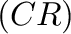
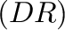
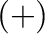
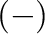
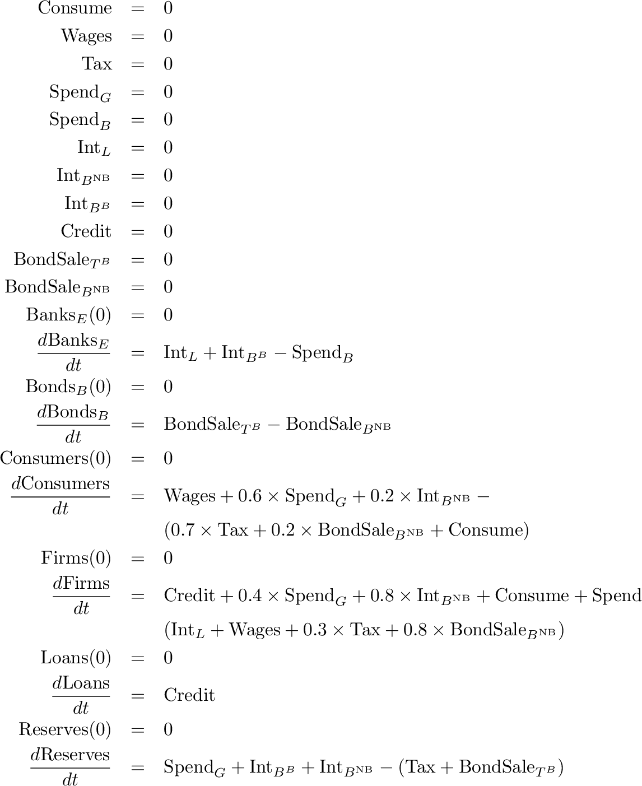
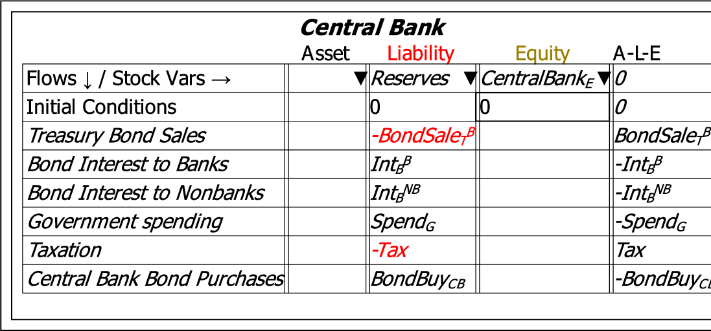
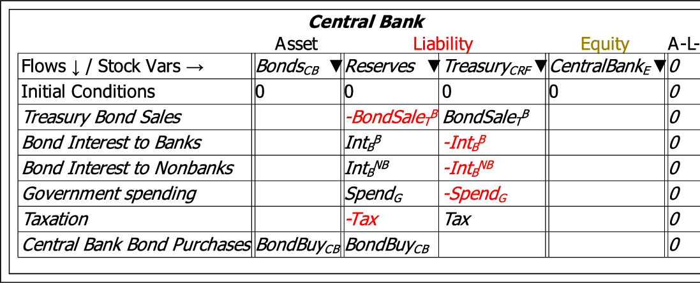

Godley tables are a unique feature of Minsky. They are based on what could be called the world's first GUI (``Graphical User Interface''), the accountant's double-entry bookkeeping table.
Double-entry was invented in 15th century Italy to enable accurate recording of financial transactions. The essence of this method is (a) to classify all of an entity's accounts as either Assets or Liabilities, with the difference between them representing the Equity of the entity; and (b) to record every transaction twice, once as a Credit and once as a Debit , where the definitions of Credit and Debit entries for Assets, Liabilities and Equity are designed to ensure that the transaction was accurately recorded. Minsky uses this GUI to generate stock-flow consistent models of financial flows, but by default uses plus  and minus  operators (though the accountant's convention of Credit and Debit can be chosen via the Options menu). This system guarantees that, no matter how complex the model is, the equations are internally consistent.
Minsky uses this GUI to generate systems of ordinary differential equations to model financial flows. The columns specify stocks, while the entries in rows are flows. The symbolic sum of a column is thus the rate of change of the associated stock. Minsky takes a table like the next figure:
![\includegraphics[width=\textwidth]{images/GodleyTableSingle}% WIDTH=555 HEIGHT=277](img320.png)
And converts it into a set of dynamic equations, which by construction are ``stock-flow consistent'':

The model is completed by defining the flows on the canvas.
In addition, because one entity's financial asset is another's financial liability, Minsky enables the construction of a multi-sectoral view of financial transactions. The wedge next to every account name is used on other tables to search for Assets that have not yet been recorded as a Liability, and vice versa. For example, the previous Table recorded the financial system from the point of view of the Banking Sector, for which Reserves--the deposit accounts of private banks at the Central Bank-are an Asset. Reserves are also a liability of the Central Bank, and that can be shown in Minsky by adding an additional Godley Table, naming it Central Bank, and recording Reserves as a Liability:

At this stage, the financial transactions have been entered only once--against the Central Bank's Liability of Reserves. Each transaction has to be entered a second time to complete its record, but at present there are no available accounts in which to record the transactions a second time.
Bond purchases by the Central Bank indicate the need for to show bonds owned by the Central Bank as an asset, while the other transactions indicate the need to show the Treasury's account at the Central Bank, the ``Consolidated Revenue Fund'', as an additional liability:

This is an inherently better way to generate a dynamic model of financial flows than the flowchart method used by all other system dynamics programs, for at least four reasons: